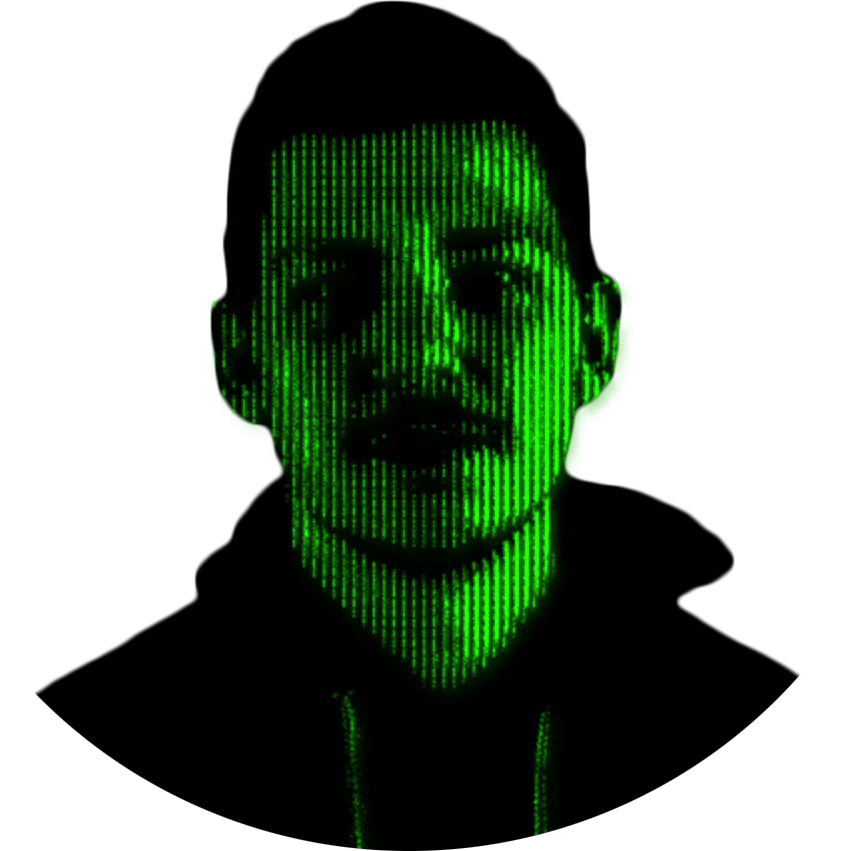

Noah Verstraeten
Security specialist

Wie ben ik?
Ik ben Noah, een student van Toegepaste Informatica aan de AP Hogeschool Antwerpen. Met een achtergrond in multimedia en webdesign heb ik een passie ontwikkeld voor online beveiliging en creatieve probleemoplossing. Mijn focus ligt op netwerkbeveiliging, gegevensprivacy en kwetsbaarheidsbeoordeling. Mijn doel is om innovatieve oplossingen te ontwikkelen die digitale assets beveiligen, terwijl ik voortdurend mijn kennis vergroot om op de hoogte te blijven van de nieuwste trends.